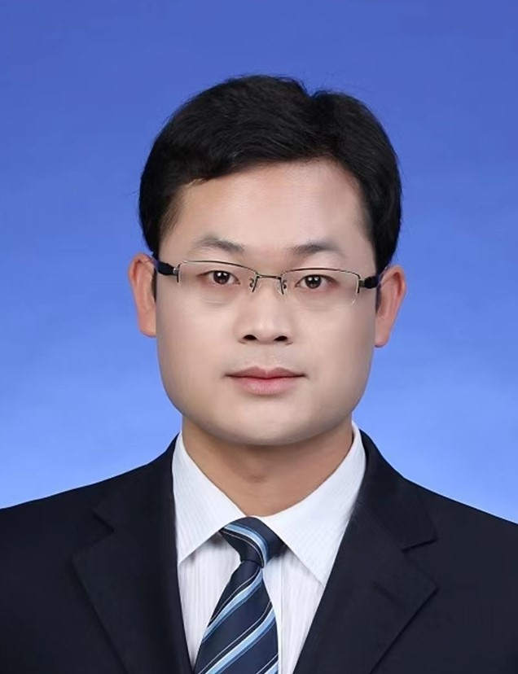

Jiang Guiyuan (姜桂圆)[英文版]
|  | 姜桂圆，中国海洋大学计算机科学与技术学院副教授，硕士生导师。2015年毕业于天津大学计算机学院，获得博士学位，导师 孙济洲 教授和 武继刚 教授。之后加入新加坡南洋理工大学（NTU）计算机学院任职博士后/研究员，跟随 T. Srikanthan 教授和 S.K. Lam 教授从事交通数据处理、安全可靠嵌入式系统设计、软件安全等方面研究工作，期间以主要参与人参加了新加坡国家自然基金委重大项目TUM-CREATE(Phase-II)。 主要从事面向智能和海洋科学的大数据处理与应用，开源软件漏洞检测及风险评估，人工智能安全, 优化算法设计等方面的研究。相继在IEEE TC, IEEE TPDS, IEEE-ACM TNET, IEEE TITS, IEEE TVLSI, IEEE TCAD, IEEE TIFS, IJCAI, SDM, DATE等著名国际期刊和会议上发表论文60余篇，其中中科院1区/CCF A类期刊/会议论文20余篇。 附属单位: 中国海洋大学，计算机科学与技术学院 联系: jiangguiyuan@ouc.edu.cn 办公室: 山东省青岛市黄岛区三沙路1299号中国海洋大学西海岸校区计算机楼 C411, 邮编：266404. 招生信息： 欢迎对人工智能、数据挖掘、开源软件漏洞检测、人工智能安全, 算法设计感兴趣，有毅力的同学加入我们团队。我们团队与国内外多个高水平研究团队保持密切的合作关系，每年选派优秀的研究生到新加坡南洋理工大学进行访问学习（一般半年或一年）。 |
News
-
October 2022:
一篇关于裂纹检测的综述论文被Applications of Artificial Intelligence (EAAI)录用.
- August 2022:
一篇关于多标准路线规划的论文被IEEE Transactions on Intelligent Transportation Systems (TITS)录用.
- July 2022:
一篇关于多标准路线规划的论文被Applications of Information Sciences录用.
- June 2022:
一篇关于交通状态预测的综述论文被Applied Soft Computing (ASC)录用.
研究方向
方向一：大数据处理及应用
交通数据分析及应用： 公共交通（地铁、公交）具有集约高效、节能环保等优点，发展公共交通是缓解交通拥堵、减少碳排放、改善环境质量的重要手段。相对于出租车/私人汽车，公共交通的使用受到行驶速度慢、旅行/等待时间不可靠、最后一公里交通等问题的制约。 围绕提升公共交通服务质量、促进公共交通使用率进而缓解交通拥堵的目的，研究交通数据分析及其在交通优化中的应用，主要包括：城市交通网络中交通状态预测、拥堵状态的传播行为建模及其在交通预测中的应用、行人/车辆轨迹数据分析，个性化最优出行路线规划，多模态公共交通系统建模与优化等。

交通拥堵传播行为的建模及预测问题
最后一公里交通优化问题
 ;
;
多模态交通网络上个性化出行方案规划问题
海洋船舶轨迹数据分析： 包括船舶轨迹数据增强、轨迹预测、基于船舶轨迹数据的捕鱼行为分析等问题。
 ;
;
基于船舶轨迹数据的捕鱼行为分析
方向二：开源软件的漏洞检测及风险评估问题
1) 软件漏洞检测及其风险评估问题 基于CVE/CWE等安全漏洞数据库，检测开源软件中是否存在相同或类似的软件漏洞；对软件代码中存在的安全漏洞进行风险评估，并研究软件漏洞的修复策略
2）C/C++生态中第三方库依赖关系分析


（a）
（b）
; （c）
; （d）
多视角软件代码分析
 ;
;
构建 C/C++ 生态中第三方依赖关系图
方向三：深度学习模型攻击和保护技术
DNN obfuscation: xxxxxxxx
学术论文(Google Scholar Profile)
* 通讯作者-
Dihao Ai, Guiyuan Jiang*, Siew-Kei Lam, Peilan He, Chengwu Li. Computer Vision Framework for Crack Detection of Civil Infrastructure - A Review. Accepted to Appear in Engineering Applications of Artificial Intelligence (EAAI), 2022. (中科院2区，IF：7.802)
-
Peilan He, Guiyuan Jiang*, Siew-Kei Lam, Yidan Sun, Fangxin Ning. Exploring Public Transport Transfer Opportunities for Pareto Search of Multicriteria Journeys. Accepted to Appear in IEEE Transactions on Intelligent Transportation Systems (TITS), 2022. DOI 10.1109/TITS.2022.3194523 (中科院1区，IF：9.551)
-
Peilan He, Guiyuan Jiang*, Siew-Kei Lam, Yidan Sun. ML-MMAS: Self-learning ant colony optimization for multi-criteria journey planning. Information Sciences, vol. 609, pp. 1052-1074, 2022. (中科院1区，IF：8.233)
-
Yidan Sun, Guiyuan Jiang*, Siew Kei Lam, Peilan He, Fangxin Ning. Multi-fold Correlation Attention Network for Predicting Traffic Speeds with Heterogeneous Frequency. Applied Soft Computing, vol. 124, July 2022, Article no. 108977 (中科院1区，IF：8.263)
-
Guiyuan Jiang, Siew Kei Lam, Peilan He, Changhai Ou, Dihao Ai. A Multi-Scale Attributes Attention Model for Transport Mode Identification. IEEE Transactions on Intelligent Transportation Systems (TITS), vol. 23, no. 1, pp. 152 - 164, 2022. (中科院1区，IF：9.551)
-
Yidan Sun, Guiyuan Jiang*, Siew Kei Lam, Peilan He. Learning Traffic Network Embeddings for Predicting Congestion Propagation. IEEE Transactions on Intelligent Transportation Systems (TITS), vol. 23, no. 8, pp. 11591 - 11604, 2022. (中科院1区，IF：9.551)
-
Yidan Sun, Guiyuan Jiang*, Siew Kei Lam, Peilan He. Predicting Traffic Congestion Evolution: A Deep Meta Learning Approach. Proc. IJCAI 2021, pp. 3031-3037. (CCF-A).
-
Fangxin Ning, Guiyuan Jiang*, Siew-Kei Lam, Changhai Ou, Peilan He, Yidan Sun. Passenger-Centric Vehicle Routing for First-Mile Transportation Considering Request Uncertainty. Information Sciences, vol. 570, pp. 241-261, 2021. (中科院1区，IF：8.233)
-
Changhai Ou, Chengju Zhou, Siew Kei Lam, Guiyuan Jiang, Fan Zhang. Multiple-Differential Mechanism for Collision-Optimized Divide-and-Conquer Attacks. IEEE Transactions on Information Forensics and Security (TIFS), vol. 16, pp. 418-430, 2021. (中科院1区，CCF-A, IF：7.231)
-
Changhai Ou, Siew Kei Lam, Guiyuan Jiang. The Science of Guessing in Collision Optimized Divide-and-Conquer Attacks. IEEE Transactions on Computer-Aided Design of Integrated Circuits and Systems (TCAD), vol. 40, no. 6, pp. 1039-1051, 2021. (中科院2区, CCF-A, IF：2.565)
-
Guiyuan Jiang, Siew Kei Lam, Fangxin Ning, Peilan He, Jidong Xie. Peak-hour Vehicle Routing for First-Mile Transportation: Problem Formulation and Algorithms. IEEE Transactions on Intelligent Transportation Systems (TITS), vol. 21, no. 8, pp. 3308-3321, 2020. (中科院1区，IF：9.551)
-
Yidan Sun, Guiyuan Jiang*, Siew Kei Lam,Fangxin Ning. Designing Energy-Efficient MPSoC with Untrustworthy 3PIP Cores. IEEE Transactions on Parallel and Distributed Systems (TPDS), vol. 31, no. 1, pp. 51-63, 2020. (CCF-A, IF: 3.757)
-
Peilan He, Guiyuan Jiang*, Siew-Kei Lam, Yidan Sun. Learning Heterogeneous Traffic Patterns for Travel Time Prediction of Bus Journeys. Information Sciences, vol. 512, pp. 1394-1406, 2020. (中科院1区，IF：8.233)
-
Dihao Ai, Guiyuan Jiang*, Siew-Kei Lam, Peilan He, Chengwu Li. Automatic pixel-wise detection of evolving cracks on rock surface in video data. Automation in Construction, vol. 119, article no. 103378, 2020. (中科院1区，IF：10.516)
-
Jiaxing Li, Jigang Wu, Guiyuan Jiang, Thambipillai Srikanthan. Blockchain-based Public Auditing for Big Data in Cloud Storage. Information Processing \& Management, vol. 57, no. 6, article no. 102382, 2020. (中科院1区，IF：7.466)
-
Wenjun Shi, Jigang Wu, Guiyuan Jiang, Siew-kei Lam, Iain Stewart. Multiple-Choice Hardware/Software Partitioning for Tree Task-Graph on MPSoC. The Computer Journal, vol. 63, no. 1, pp. 688 - 700, 2020. (CCF-B，IF：1.762)
-
Changhai Ou, Siew Kei Lam, Chengju Zhou, Guiyuan Jiang, Fan Zhang. A Lightweight Detection Algorithm For Collision-Optimized Divide-and-Conquer Attacks. IEEE Transactions on Computers (TC), vol. 69, no. 11, pp. 1694-1706, 2020. (CCF-A，IF：3.183)
-
Yidan Sun, Guiyuan Jiang*, Siew Kei Lam, Shicheng Chen, Peilan He. `Bus Travel Speed Prediction using Attention Network of Heterogeneous Correlation Features. Proc. SDM 2019, pp. 73-81. (CCF-B).
-
Peilan He, Guiyuan Jiang*, Siew-Kei Lam, Dehua Tang. Travel-Time Prediction of Bus Journey With Multiple Bus Trips. IEEE Transactions on Intelligent Transportation Systems (TITS), vol. 20, no. 11, pp. 4192-4205, 2019. (中科院1区，IF：9.551)
-
Siew-Kei Lam, Guiyuan Jiang, Meiqing Wu, Bin Cao. Area-Time Efficient Streaming Architecture for FAST and BRIEF Detector. IEEE Transactions on Circuits and Systems-II (TCAS-II), vol. 66, no. 2, pp. 282-286, 2019. (中科院2区，IF：3.691)
-
Saru Vig, Rohan Juneja, Guiyuan Jiang, Siew-Kei Lam, Changhai Ou. Framework for Fast Memory Authentication using Dynamically Skewed Integrity Tree. IEEE Transactions on Very Large Scale Integration Systems (TVLSI), vol. 27, no. 10, pp. 2331-2343, 2019. (中科院2区，IF：3.691)
-
Ying Zhou, Guiyuan Jiang*, Guifeng Jiang. Discover the road sequences of bus lines using bus stop information and historical bus locations. International Journal of Distributed Sensor Networks(IJDSN), vol. 20, no. 11, pp. 4192-4205, 2019. (SCI，IF：1.938)
-
Peilan He, Yidan Sun, Guiyuan Jiang, Siew-Kei Lam. Predicting Travel Time of Bus Journeys with Alternative Bus Services. ICDM Workshops, pp. 114-123, 2019.
-
Zikai Zhang, Jigang Wu, Long Chen, Guiyuan Jiang, Siew-kei Lam. Collaborative Task Offloading with Computation Result Reusing for Mobile Edge Computing. The Computer Journal, vol. 62, no. 10, pp. 1450-1462, 2019. (CCF-B，IF：1.762)
-
Gangqiang Zhou, Jigang Wu, Long Chen, Guiyuan Jiang, Siew-kei Lam. Efficient three-stage auction schemes for cloudlets deployment in wireless access network. Wireless Networks, vol. 25, no. 6, pp. 3335-3349, 2019. (CCF-C，IF：2.701)
-
Jigang Wu, Yalan Wu, Guiyuan Jiang, Siew-kei Lam. Algorithms for Reconfiguring NoC-Based Fault-Tolerant Multiprocessor Arrays. Journal of Circuits, Systems, and Computers, vol. 28, no. 7, no. 1950111, 2019. (SCI，IF：1.278)
-
Dihao Ai *, Guiyuan Jiang*, Siew Kei Lam, Chengwu Li. Automatic Pixel-Level Pavement Crack Detection Using Information of Multi-Scale Neighborhoods. IEEE Access, vol. 6, pp. 24452-24463, 2018. (SCI，IF：3.476)
-
Saru Vig, Guiyuan Jiang, Siew-Kei Lam. Dynamic Skewed Tree for Fast Memory Integrity Verification. Proc. DATE 2018, pp. 642-647. (CCF-B).
-
Jigang Wu, Long Chen, Xu Wang, Guiyuan Jiang, Siew-kei Lam, Thambipillai Srikanthan. Algorithms for Replica Placement and Update in Tree Network. The Computer Journal, vol. 61, no. 2, pp. 273-287, 2018. (CCF-B，IF：1.762)
-
Longting Zhu, Jigang Wu, Guiyuan Jiang, Long Chen, Siew-Kei Lam. Efficient hybrid multicast approach in wireless data center network. Future Generation Computer Systems, vol. 83, pp. 27-36, 2018. (SCI 2区，IF：7.307)
-
Guiyuan Jiang, Siew-Kei Lam, Yidan Sun, Lijia Tu, Jigang Wu. Joint Charging Tour Planning and Depot Positioning for Wireless Sensor Networks using Mobile Chargers. IEEE/ACM Transactions on Networking (TON), vol. 25, no. 4, pp. 2250-2266, 2017. (CCF-A，IF：3.796)
-
Kalindu Herath, Alok Prakash, Guiyuan Jiang, Thambipillai Srikanthan. Communication-aware Partitioning for Energy Optimization of Large FPGA Designs. Proc. GLSVLSI 2017, pp. 407-410.
-
Saru Vig, Tan Yng Tzer, Guiyuan Jiang, Siew-Kei Lam. Customizing Skewed Trees for Fast Memory Integrity Verification in Embedded Systems. Proc. ISVLSI 2017, pp. 213-218.
-
Zikai Zhang, Jigang Wu, Guiyuan Jiang, Long Chen, Siew-Kei Lam. QoE-Aware Task Offloading for Time Constraint Mobile Applications. Proc. LCN 2017, pp. 510-513. (CCF-C).
-
Guiyuan Jiang, Jigang Wu, Yajun Ha, Yi Wang, Jizhou Sun. Reconfiguring Three-Dimensional Processor Arrays for Fault-Tolerance: Hardness and Heuristic Algorithms. IEEE Transactions on Computers (TC), vol. 64, no. 10, pp. 2926-2939, 2015. (CCF-A，IF：3.183)
-
Guiyuan Jiang, Jigang Wu, Siew Kei Lam, Thambipillai Srikanthan, Jizhou Sun. Algorithmic aspects of graph reduction for hardware/software partitioning. The Journal of Supercomputing, vol. 71, no. 6, pp. 2251-2274, 2015. (CCF-C，IF：2.557)
-
Xu Wang, Jigang Wu, Guiyuan Jiang, Siew Kei Lam, Thambipillai Srikanthan. Fast Replica Placement and Update Strategies in Tree Networks. Proc. CCGRID 2015, pp. 915-920. (CCF-C).
-
Jigang Wu, Longting Zhu, Peilan He, Guiyuan Jiang, Siew Kei Lam, Thambipillai Srikanthan. Reconfigurations for Processor Arrays with Faulty Switches and Links. Proc. CCGRID 2015, pp. 141-148. (CCF-C).
-
Guiyuan Jiang, Jigang Wu, Jizhou Sun, Yiyi Gao. Flexible rerouting schemes for reconfiguration of multiprocessor arrays. Journal of Parallel and Distributed Computing, vol. 74, no. 10, pp. 3026-3036, 2014. (CCF-B，IF：4.542)
-
Jigang Wu, Guiyuan Jiang, Yuze Shen, Siew Kei Lam, Jizhou Sun, Thambipillai Srikanthan. Parallel reconfiguration algorithms for mesh-connected processor arrays. The Journal of Supercomputing, vol. 69, no. 2, pp. 610-628, 2014. (CCF-C，IF：2.557)
-
Wu Jigang, Thambipillai Srikanthan, Guiyuan Jiang, Kai Wang. Constructing Sub-Arrays with ShortInterconnects from Degradable VLSI Arrays. IEEE Transactions on Parallel and Distributed Systems (TPDS), vol. 25, no. 4, pp. 929-938, 2014. (中科院2区，CCF-A, IF: 3.757)
-
Guiyuan Jiang, Jigang Wu, Jizhou Sun, Longting Zhu. Reducing the Interconnection Length for 3D Fault-Tolerant Processor Arrays. Proc. ICA3PP 2014, pp. 497-510, 2014. (CCF-C).
-
Guiyuan Jiang, Jigang Wu, Jizhou Sun. Efficient reconfiguration algorithms for communication-aware three-dimensional processor arrays. Parallel Computing, vol. 39, no. 9, pp. 490-503, 2013. (CCF-B，IF：0.983)
-
Guiyuan Jiang, Jigang Wu, Jizhou Sun, Yiyi Gao. Constructing Compact Logical Arrays under Flexible Rerouting Schemes. Proc. HPCC 2013, pp. 374-381, 2013. (CCF-C).
-
Guiyuan Jiang, Jigang Wu, Jizhou Sun. Efficiency of Flexible Rerouting Scheme for Maximizing Logical Arrays. Proc. NPC 2013, pp. 194-206, 2013. (CCF-C).
-
Guiyuan Jiang, Jigang Wu, Jizhou Sun. Non-Backtracking Reconfiguration Algorithm for Three-dimensional VLSI Arrays. Proc. ICPADS 2012, pp. 362-367, 2012. (CCF-C).
学术服务
Reviewer for a number of Journals and Conferences, including IEEE Journals: TC, TPDS, ToN, TVLSI, TIE, TCAD, TMM, TCOMM, JSAC, TITS, TVT, TGRS; Elsevier Journals: INS, CN, AUTCON, FGCS, TCS, PARCO, JPDC, TRP-C, TRP-D, TRP-E；Springer Journals: TJSC, JCST, etc; PDCAT, GLSVLSI, PAAP, etc.